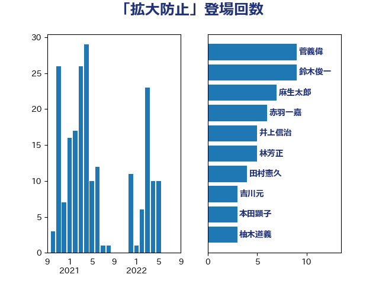

単語「拡大防止」

| 菅義偉 | 自由民主党 | 9 回 |
| 鈴木俊一 | 自由民主党 | 9 回 |
| 麻生太郎 | 自由民主党 | 7 回 |
| 赤羽一嘉 | 公明党 | 6 回 |
| 井上信治 | 自由民主党 | 5 回 |
| 林芳正 | 自由民主党 | 5 回 |
| 田村憲久 | 自由民主党 | 4 回 |
| 吉川元 | 立憲民主党 | 3 回 |
| 本田顕子 | 自由民主党 | 3 回 |
| 柚木道義 | 立憲民主党 | 3 回 |
| 伊藤孝恵 | 国民民主党 | 2 回 |
| 古屋範子 | 公明党 | 2 回 |
| 山井和則 | 立憲民主党 | 2 回 |
| 岸信夫 | 自由民主党 | 2 回 |
| 川田龍平 | 立憲民主党 | 2 回 |
| 斉藤鉄夫 | 公明党 | 2 回 |
| 武田良太 | 自由民主党 | 2 回 |
| 浅野哲 | 国民民主党 | 2 回 |
| 浜口誠 | 国民民主党 | 2 回 |
| 片山大介 | 日本維新の会 | 2 回 |
| 田畑裕明 | 自由民主党 | 2 回 |
| 石井苗子 | 日本維新の会 | 2 回 |
| 西村康稔 | 自由民主党 | 2 回 |
| 逢沢一郎 | 自由民主党 | 2 回 |
| 三浦靖 | 自由民主党 | 1 回 |
| 上川陽子 | 自由民主党 | 1 回 |
| 上田清司 | 国民民主党 | 1 回 |
| 下村博文 | 自由民主党 | 1 回 |
| 世耕弘成 | 自由民主党 | 1 回 |
| 井林辰憲 | 自由民主党 | 1 回 |
| 伊藤岳 | 日本共産党 | 1 回 |
| 佐藤英道 | 公明党 | 1 回 |
| 加藤勝信 | 自由民主党 | 1 回 |
| 吉川赳 | 無所属 | 1 回 |
| 和田義明 | 自由民主党 | 1 回 |
| 坂本哲志 | 自由民主党 | 1 回 |
| 塩田博昭 | 公明党 | 1 回 |
| 大串博志 | 立憲民主党 | 1 回 |
| 小泉進次郎 | 自由民主党 | 1 回 |
| 山本剛正 | 日本維新の会 | 1 回 |
| 山本博司 | 公明党 | 1 回 |
| 山際大志郎 | 自由民主党 | 1 回 |
| 岸田文雄 | 自由民主党 | 1 回 |
| 岸真紀子 | 立憲民主党 | 1 回 |
| 平沼正二郎 | 自由民主党 | 1 回 |
| 新谷正義 | 自由民主党 | 1 回 |
| 杉尾秀哉 | 立憲民主党 | 1 回 |
| 松島みどり | 自由民主党 | 1 回 |
| 枝野幸男 | 立憲民主党 | 1 回 |
| 森屋隆 | 立憲民主党 | 1 回 |
| 熊田裕通 | 自由民主党 | 1 回 |
| 牧山ひろえ | 立憲民主党 | 1 回 |
| 田野瀬太道 | 無所属 | 1 回 |
| 笠浩史 | 無所属 | 1 回 |
| 緑川貴士 | 立憲民主党 | 1 回 |
| 舩後靖彦 | れいわ新選組 | 1 回 |
| 若宮健嗣 | 自由民主党 | 1 回 |
| 茂木敏充 | 自由民主党 | 1 回 |
| 藤井比早之 | 自由民主党 | 1 回 |
| 赤池誠章 | 自由民主党 | 1 回 |
| 進藤金日子 | 自由民主党 | 1 回 |
| 金城泰邦 | 公明党 | 1 回 |
| 鈴木庸介 | 立憲民主党 | 1 回 |
| 阿部知子 | 立憲民主党 | 1 回 |
| 青山周平 | 自由民主党 | 1 回 |
| 青木一彦 | 自由民主党 | 1 回 |
| 音喜多駿 | 日本維新の会 | 1 回 |
| 須藤元気 | 無所属 | 1 回 |
| 高木かおり | 日本維新の会 | 1 回 |
| 高橋光男 | 公明党 | 1 回 |